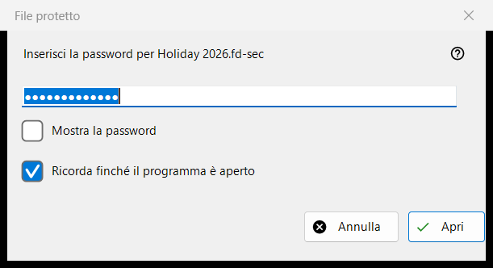
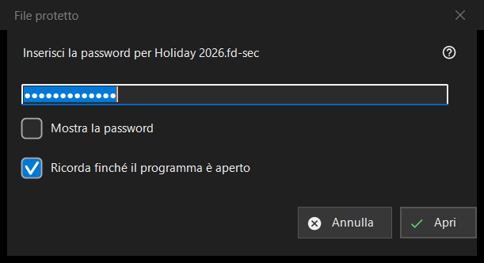

File protetto
Scopo
Chiede la password di un contenitore protetto, un file .fd-sec, quando arriva sullo schermo. Si apre quando premi Invio o fai clic sul file bloccato, e da sola quando ti fermi su un file di questo tipo; una presentazione salta i file protetti e li conta. Il contenuto viene mostrato dalla memoria: nulla di decifrato viene scritto su disco. Solo nella versione moderna del programma.


In questo ordine
- Digita la password; è nascosta.
- Attiva «Ricorda finché il programma è aperto» se altri contenitori usano la stessa password.
- Premi «Apri» (Invio).
- «Annulla» (Esc) lascia il file bloccato.
Gli elementi
La password
La richiesta nomina il file. «Mostra la password» all'inizio è disattivato. La password viene usata esattamente come digitata e controllata fuori dal thread principale, così il programma resta reattivo mentre la lenta derivazione della chiave è in corso; non viene mai scritta nel registro, in un file o nell'archivio di Windows.
Ricorda finché il programma è aperto
Attivo in modo predefinito. Tiene la password in memoria fino alla chiusura del programma, e solo dopo che un contenitore si è davvero aperto con essa; il programma la prova poi in silenzio sui contenitori successivi e chiede solo quando non va bene.
Un rifiuto e una password vuota
Dopo un tentativo fallito la finestra ritorna con «Non si è aperto: la password può essere sbagliata, il file potrebbe non essere mai stato un contenitore, oppure è stato alterato.» Questi casi sembrano uguali di proposito: una chiave sbagliata e un byte cambiato non si distinguono. Un contenitore danneggiato o non supportato riceve un proprio messaggio e nessuna finestra della password. Una password vuota è accettata, ma il primo Invio mostra «Una password vuota non è una protezione: un file così è solo nascosto a uno sguardo distratto. Premi di nuovo per aprirlo.» e la seconda pressione apre il file.
Annulla
Annulla, Esc e la casella di chiusura sono un unico percorso e non cambiano nulla. Il file mostra «Serve una password - premi Invio o fai clic sul file» e il programma non la chiede di nuovo finché quella cartella resta aperta. Invio o un clic sul file la chiedono di nuovo.